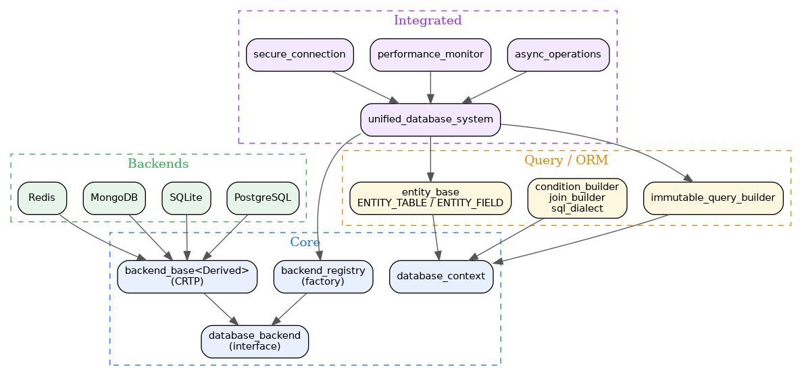

- Generated by
 1.12.0
1.12.0
|
Database System 0.1.0
Advanced C++20 Database System with Multi-Backend Support
|
Database System is an advanced C++20 database abstraction layer providing unified access to multiple database backends. It eliminates vendor lock-in through a type-safe, backend-agnostic interface with zero-configuration setup and RAII-based resource management.
As a Tier 3 system in the kcenon ecosystem, it builds on common_system for error handling (Result<T>), thread_system for async execution, and monitoring_system for performance observability.
| Category | Feature | Description |
|---|---|---|
| Backends | PostgreSQL | Full-featured relational backend via libpqxx |
| Backends | SQLite | Lightweight embedded database backend |
| Backends | MongoDB | Document-oriented NoSQL backend (experimental) |
| Backends | Redis | Key-value store backend (experimental) |
| ORM | Entity Macros | ENTITY_TABLE, ENTITY_FIELD, ENTITY_METADATA with C++20 concepts |
| Query | Immutable Builder | Thread-safe, functional-style query construction |
| Query | SQL Dialect | Backend-aware SQL generation with condition and join builders |
| Integration | Unified System | Zero-config entry point with builder pattern |
| Integration | Connection Pool | Health-checked connection pooling |
| Async | Async Operations | Asynchronous database operations via Asio |
| Security | Secure Connection | TLS/SSL encrypted connections with audit logging |
| Monitoring | Performance Monitor | Real-time query metrics and pool statistics |
The system is organized in layers. The core backend interface defines the contract, concrete backends implement it, and higher-level modules (query, ORM, integrated) compose functionality on top.

A minimal example connecting to SQLite and executing a query:
| Module | Directory | Key Headers | Description |
|---|---|---|---|
| Core | core/ | database_backend.h, backend_base.h, backend_registry.h | Backend interface, CRTP base, factory registry |
| PostgreSQL | backends/postgresql/ | postgresql_backend.h | Full-featured PostgreSQL backend via libpqxx |
| SQLite | backends/sqlite/ | sqlite_backend.h | Lightweight embedded SQLite backend |
| MongoDB | backends/mongodb/ | mongodb_backend.h | Document-oriented NoSQL backend (experimental) |
| Redis | backends/redis/ | redis_backend.h | Key-value store backend (experimental) |
| Query | query/ | immutable_query_builder.h | Thread-safe, immutable query construction |
| Query Builder | query_builder/ | condition_builder.h, join_builder.h, sql_dialect.h | SQL generation with conditions, joins, and dialect awareness |
| ORM | orm/ | entity.h | ENTITY_TABLE, ENTITY_FIELD macros with C++20 concepts |
| Integrated | integrated/ | unified_database_system.h | Zero-config unified entry point with builder pattern |
| Async | async/ | async_operations.h | Asynchronous database operations via Asio |
| Monitoring | monitoring/ | performance_monitor.h, pool_metrics.h | Real-time query and pool performance metrics |
| Security | security/ | secure_connection.h | TLS/SSL encrypted connections and audit logging |
| Protocol | protocol/ | database_protocol.h | Database protocol and serialization |
New to database_system? Start with the tutorials below, then dig into the FAQ and troubleshooting guide as questions come up.
| Resource | Description |
|---|---|
| Quick Start Tutorial | Connection setup, basic CRUD, result handling, transactions |
| ORM Entity Mapping Tutorial | ENTITY_FIELD / ENTITY_METADATA, constraints, relationships, query builder integration |
| Multi-Backend Tutorial | SQLite vs PostgreSQL vs MySQL vs MongoDB, connection modes, migration patterns |
| Frequently Asked Questions | Backend selection, pooling, isolation levels, multi-tenancy, async, and more |
| Troubleshooting Guide | Connection failures, deadlocks, ORM mistakes, slow queries, migration drift |
| Example | Source | Description |
|---|---|---|
| Basic Connection | basic_connection.cpp | Database connection and simple query execution |
| Query Builder | query_builder_usage.cpp | Fluent query construction with the immutable builder |
| Transactions | transaction_management.cpp | Transaction begin, commit, and rollback patterns |
| ORM Entities | orm_entity_demo.cpp | Entity mapping with ENTITY_TABLE and ENTITY_FIELD macros |
| Error Handling | error_handling.cpp | Result<T> error handling and recovery strategies |
| Connection Pool | connection_pool_demo.cpp | Connection pooling with health checks |
Database System is a Tier 3 system in the kcenon ecosystem, sitting between the monitoring layer and the application layer:
| System | Tier | Relationship | Repository |
|---|---|---|---|
| common_system | 0 | Foundation: Result<T>, IExecutor, ILogger | https://github.com/kcenon/common_system |
| thread_system | 1 | Async execution and thread pooling | https://github.com/kcenon/thread_system |
| container_system | 1 | Data serialization format | https://github.com/kcenon/container_system |
| monitoring_system | 2 | Performance observability | https://github.com/kcenon/monitoring_system |
| database_system | 3 | This project | https://github.com/kcenon/database_system |
| network_system | 4 | Network communication layer | https://github.com/kcenon/network_system |
| pacs_system | 5 | Full ecosystem consumer | https://github.com/kcenon/pacs_system |